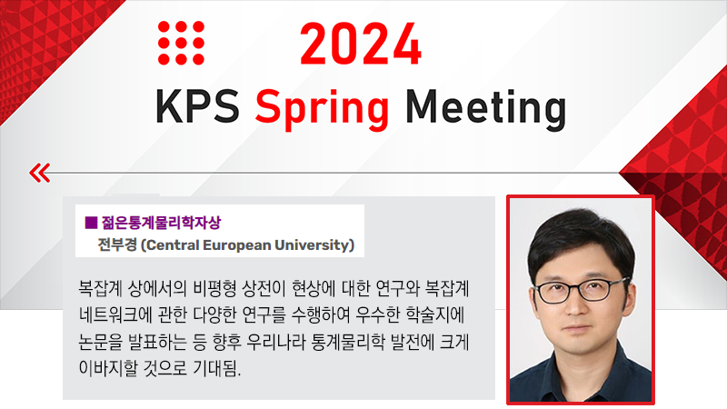

Bukyoung Jhun has been selected as the recipient of the Young Statistical Physicist Award from the Korean Physical Society. The award was presented at the 2024 KPS Spring Meeting in recognition of his pioneering research on nonequilibrium phase transitions in complex systems, as well as his broad contributions to the study of complex networks. He is expected to make a significant impact on the future development of statistical physics in Korea.